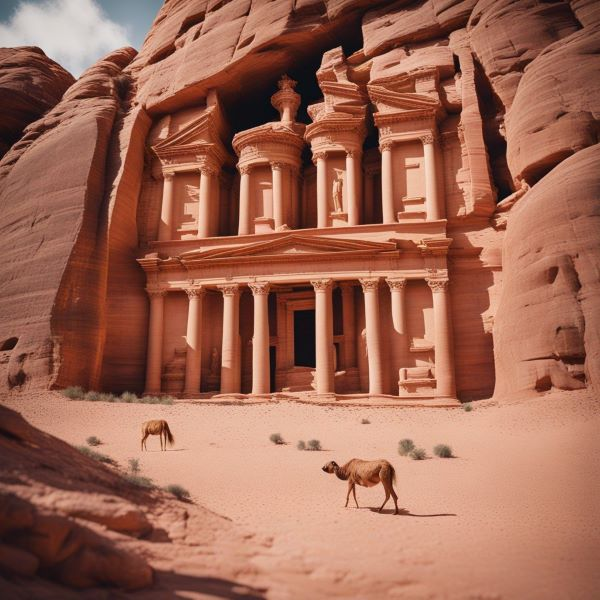

Petra is a vast, rose-red city carved into the sandstone cliffs of Jordan. It is one of the most famous archaeological sites in the world and is a UNESCO World Heritage Site. Petra was the capital of the Nabataean Kingdom, which flourished from the 1st century BC to the 2nd century AD. The Nabataean Arabs were skilled traders and Petra became a major trading center on the Silk Road.
